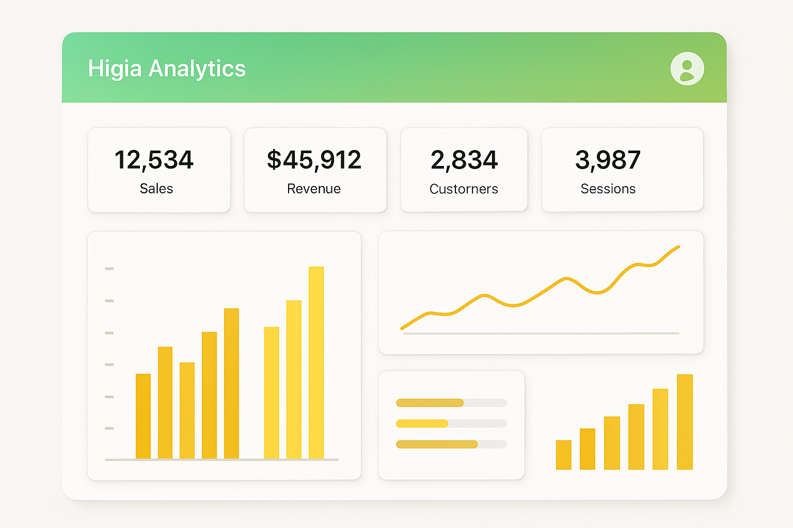
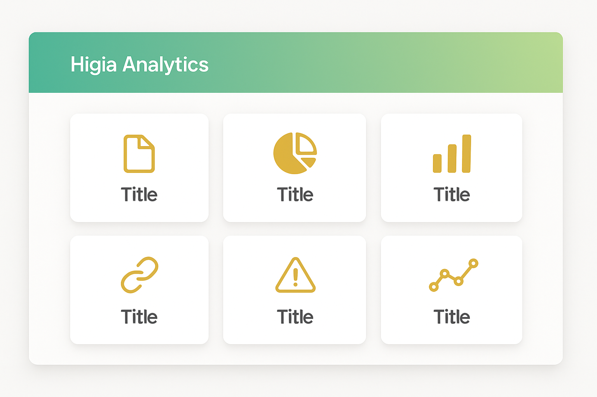

Dashboard


Higia Analytics é um sistema de apoio à análise de dados da saúde suplementar, desenvolvido como projeto de pesquisa do Curso Superior de Tecnologia em Análise e Desenvolvimento de Sistemas da FATEC Guarulhos.
Auxiliar na análise de dados do setor de saúde suplementar, oferecendo uma ferramenta gratuita e de código aberto capaz de processar automaticamente os dados públicos da Agência Nacional de Saúde Suplementar (ANS).
As bases de dados da ANS estão disponibilizadas em formato .dbc, que não é compatível com ferramentas tradicionais de análise como Power BI e Tableau. Isso gera lentidão no processo de Business Intelligence e atrasa respostas estratégicas no setor.
O Higia Analytics realiza o processamento automatizado de arquivos .dbc, executando todo o processo de ETL (Extração, Transformação e Carga de dados) e gerando dashboards interativos com indicadores relevantes, sem necessidade de ferramentas terceiras ou licenças comerciais.
Análise de Beneficiários: Identificação de tendências por região e faixa etária
Gestão Econômico-Financeira: Avaliação da sustentabilidade das operadoras
Rede Credenciada: Mapeamento de cobertura regional e especialidades médicas
Dashboards Interativos: Visualizações intuitivas para tomada de decisão
Desenvolvido em Python (back-end) com interface em HTML e CSS, o sistema utiliza arquitetura modular para facilitar expansões e adaptações às necessidades específicas de operadoras, pesquisadores e gestores do setor.
Desenvolvedores: João Gabriel Lima de Moraes e Danilo Zamai
Orientação: Prof. Esp. Alécio Aparecido Preto de Godoi
Instituição: FATEC Guarulhos
Com mais de 52,3 milhões de beneficiários registrados no setor de saúde suplementar (dados de abril/2025), o Higia Analytics visa democratizar o acesso à análise de dados, reduzindo custos e tempo de processamento, especialmente para operadoras de menor porte que não possuem recursos especializados.